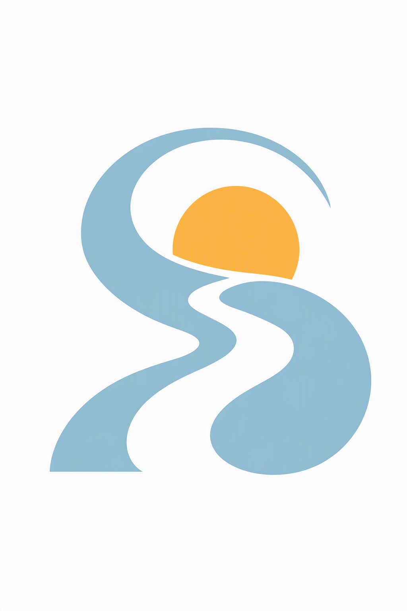
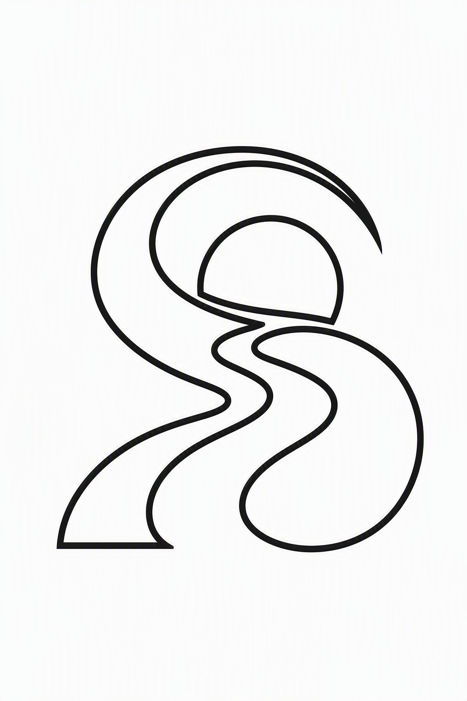

01
Resting
A quiet pause
No recent activity
No activity date, or last activity was neither today nor yesterday (UTC).
Source file
apps/mobile/src/screens/home/BlossomMascot.tsxMeet your little companion
A visual inventory of the mascots in the current mobile app. Existing paths, existing colors, no redesigns — a place to review them together before deciding what comes next.
The four states rendered on the Home screen.
No recent activity
No activity date, or last activity was neither today nor yesterday (UTC).
apps/mobile/src/screens/home/BlossomMascot.tsxMaintained · under 3 days
The streak is maintained and its count is below 3 days.
apps/mobile/src/screens/home/BlossomMascot.tsxMaintained · 3–6 days
The streak is maintained and its count is between 3 and 6 days.
apps/mobile/src/screens/home/BlossomMascot.tsxMaintained · 7+ days
The streak is maintained and its count is at least 7 days.
apps/mobile/src/screens/home/BlossomMascot.tsxActual Android vector drawables, including the initial layout artwork.
No recent activity
apps/mobile/plugins/streak-widget/android/app/src/main/res/drawable/widget_blossom_sad.xmlMaintained · under 3 days
apps/mobile/plugins/streak-widget/android/app/src/main/res/drawable/widget_blossom_sprout.xmlMaintained · 3–6 days
apps/mobile/plugins/streak-widget/android/app/src/main/res/drawable/widget_blossom_steady.xmlMaintained · 7+ days
apps/mobile/plugins/streak-widget/android/app/src/main/res/drawable/widget_blossom_blooming.xmlInitial drawable in the widget layout. The widget provider replaces it with the current streak state.
apps/mobile/plugins/streak-widget/android/app/src/main/res/drawable/widget_blossom_happy.xmlRelated mobile artwork — not additional Blossom characters.

I1Maintained rhythm, before 17:00 local time. Also configured as the splash image.
apps/mobile/assets/morning.pngMaintained rhythm, from 17:00 until midnight local time.
apps/mobile/assets/evening.png
I3A rhythm that is not maintained, regardless of time of day.
apps/mobile/assets/irregular.pngDefault app icon. The adaptive icon, favicon and legacy splash PNG currently have the same file contents.
apps/mobile/assets/icon.png · adaptive-icon.png · favicon.png · splash.pngThe older illustration, plus the active brand mark and mood symbols.
Present in the repository, but no current mobile code reference was found. Included for context, not as an active state.
apps/mobile/assets/images/blossom-home.pngUsed in onboarding, the journal and the app lock screen.
apps/mobile/src/design-system/PetalMark.tsxFive options in MoodFacePicker. These are separate from Blossom’s streak states.
apps/mobile/src/design-system/MoodFacePicker.tsx